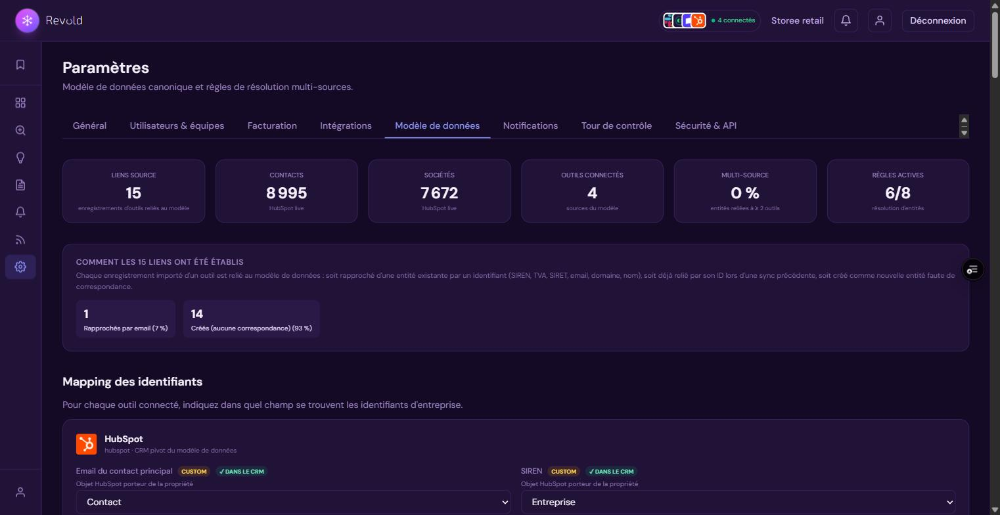
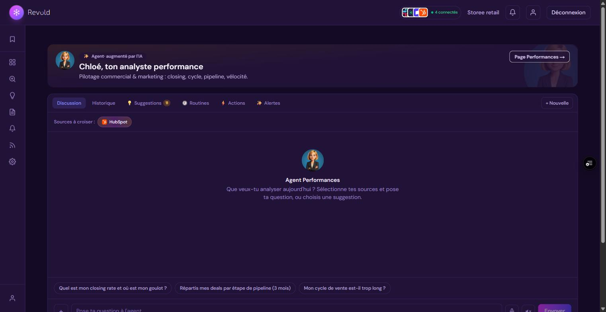
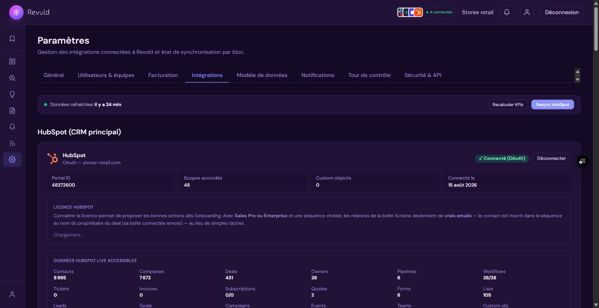

Infrastructure, modèle de données, flux d'ingestion, couche IA, sécurité et conformité RGPD. Document destiné aux CTO, DevOps, RSSI et équipes IT chargées d'évaluer ou d'exploiter la plateforme.
Revold est une application Next.js 16 (App Router) déployée sur Vercel, adossée à une base PostgreSQL managée (Supabase) hébergée dans l'Union européenne. Elle agrège les données de plusieurs outils SaaS d'entreprise (CRM, facturation, comptabilité, support), les réconcilie dans un modèle canonique unique, et expose une couche d'analyse assistée par IA ainsi qu'une couche d'exécution d'actions vers les outils sources.
Tous les chiffres proviennent d'un moteur d'agrégation déterministe exécuté en SQL. Le modèle de langage reçoit ces chiffres et rédige l'analyse : il ne les produit jamais. Le même moteur sert au tool de l'agent et au recalcul par période côté interface — un changement de période ne déclenche aucun appel LLM.
Les cinq outils de l'agent qui produisent un effet (proposition d'alerte, rapport, graphique, action sur un deal, redirection) sont capturés et jamais exécutés côté serveur : ils remontent à l'interface pour validation explicite de l'utilisateur.
Quand une donnée est indisponible ou qu'un périmètre n'est pas résoluble (pipeline ambigu, mesure inapplicable à l'entité), le moteur retourne une erreur explicite au lieu de zéro — un zéro déclencherait à tort des alertes de seuil.
Chaque table métier porte organization_id et est protégée par des politiques
Row Level Security PostgreSQL. La résolution de l'organisation courante interdit
explicitement tout fallback de type « première organisation trouvée ».
| Composant | Version | Rôle |
|---|---|---|
| Next.js | 16.2.2 | Framework applicatif — App Router, Server Components, routes API, middleware |
| React / React DOM | 19.2.4 | Couche de rendu |
| TypeScript | 5.x (mode strict) | Typage statique de bout en bout |
| Tailwind CSS | 4.x | Design system (variables CSS, @theme inline) — aucune librairie UI tierce |
| Node.js | 20.x | Runtime serveur (fonctions Vercel) |
| npm | — | Gestionnaire de paquets (lockfile versionné) |
| Paquet | Version | Usage |
|---|---|---|
@supabase/supabase-js | 2.101.x | Client base de données et authentification |
@supabase/ssr | 0.10.x | Session serveur via cookies (middleware, Server Components) |
@anthropic-ai/sdk | 0.82.x | Agents IA (Claude) |
recharts | 3.8.x | Visualisations (courbes, barres, anneaux) |
zod | 4.3.x | Validation de schémas (variables d'environnement, entrées) |
resend | 6.12.x | Emails transactionnels (alertes, digests) |
@sentry/nextjs | 10.51.x | Supervision d'erreurs (activé uniquement si DSN présent) |
@vercel/analytics | 2.x | Métriques d'usage |
pg | 8.20.x | Client PostgreSQL du runner de migrations |
Aucun ORM : requêtes SQL explicites via le client Supabase, pour garder le contrôle total sur les plans d'exécution et les politiques RLS. Aucune librairie de composants : le design system est maison, ce qui élimine une classe entière de dépendances transitives. Un seul fournisseur d'IA (Anthropic), pas de framework d'orchestration intermédiaire.
vitest 4.x + happy-dom pour les tests, @testing-library/react pour
les composants, eslint 9 avec la configuration Next, prettier 3.x,
et puppeteer-core pour la génération automatisée de captures.
/api/cron/*→
Connecteurs / ETL / Moteurs→
Base de données
La commande de build exécutée par Vercel est npm run ci-build, qui enchaîne
trois étapes bloquantes :
npm run migrate — application transactionnelle des migrations SQL en attente ;npm run test:run — suite de tests unitaires ;next build — compilation de l'application.Une migration en erreur ou un test rouge empêche le déploiement. Le schéma de la base et le code applicatif ne peuvent pas diverger silencieusement lors d'une mise en production.
| Tâche | Fréquence (UTC) | Rôle |
|---|---|---|
/api/cron/etl-delta | toutes les 30 min | Synchronisation incrémentale HubSpot + recalcul du snapshot |
/api/cron/etl-full | dimanche 03:00 | Réconciliation complète hebdomadaire |
/api/cron/sync-connectors | toutes les heures | Synchronisation des connecteurs directs (Stripe, Pennylane…) |
/api/cron/enrich-companies | toutes les 5 min | Enrichissement Sirene en tâche de fond + source LinkedIn (bêta) pour les effectifs |
/api/cron/run-routines | toutes les 15 min | Exécution serveur des routines d'agents (6 max par passage) |
/api/cron/compute-kpis | toutes les 6 h | Calcul des instantanés de KPI |
/api/cron/detect-risks | toutes les 6 h | Détection des deals à risque |
/api/cron/compute-fill-rates | toutes les 6 h | Taux de remplissage des propriétés CRM |
/api/cron/check-alerts | toutes les 6 h | Évaluation des seuils d'alerte |
/api/cron/check-objectives | toutes les 6 h | Progression des objectifs |
/api/cron/daily-digest | 07:00 | Digest quotidien (email / Slack) |
/api/cron/generate-insights | lundi 06:30 | Génération hebdomadaire d'insights |
Authentification des tâches par en-tête Authorization: Bearer <CRON_SECRET>.
Les tâches longues (ETL, connecteurs, routines, enrichissement) sont configurées avec une durée maximale
d'exécution de 300 secondes ; l'appel principal aux agents IA également.
Le middleware s'applique aux routes /dashboard/* et /login. Il assure trois
fonctions : rafraîchissement de la session Supabase et propagation des cookies, redirection
d'authentification, et injection de l'en-tête x-pathname permettant au layout serveur
d'appliquer le contrôle d'accès par espace de travail (voir §8).
Chaque outil source possède son propre vocabulaire (un « customer » Stripe, une « company » HubSpot, un « client » Pennylane). Revold les projette dans un modèle canonique unique, ce qui rend les croisements possibles indépendamment de l'outil d'origine.
| Table | Colonnes structurantes |
|---|---|
companies | siren, siret, vat_number, custom_id, custom_ids[], legal_name, name, domain, segment, industry, annual_revenue, employee_count, contract_end, hubspot_id |
contacts | company_id, email, full_name, title, phone, is_mql, is_sql, lifecycle_stage, hubspot_id |
deals | company_id, owner_id, stage_id, amount, close_date, created_date, last_activity_at, is_at_risk, risk_reasons, win_probability |
invoices | company_id, deal_id, number, status, amount_total / amount_paid / amount_due, issued_at, due_at, paid_at, direction, primary_source |
subscriptions | company_id, status, mrr, current_period_start / end, started_at, canceled_at, primary_source |
payments, tickets | Paiements et tickets rapprochés à l'entreprise et au contact |
bank_transactions, bank_accounts, ledger_balances | Flux bancaires signés, comptes et balances comptables |
pipeline_stages | Correspondance réelle des étapes de pipeline (jamais devinée), clé unique par identifiant externe |
source_links | Table pivot : provider, external_id, entity_type, internal_id, match_method, match_score — unicité sur (organisation, provider, identifiant externe, type) |
| Table | Rôle |
|---|---|
identifier_field_mapping | Chemin réel du champ portant chaque identifiant, par outil (ex. metadata.siren chez Stripe) |
entity_resolution_config | Règles de rapprochement : activation, priorité, paramètres |
field_authority_config | Quelle source fait autorité sur quel champ en cas de conflit |
tool_mappings | Outils sources par page et par agent |
page_tiles, page_data_tables | Tuiles KPI et visualisations persistées, par page |
page_access | Droits par page et par équipe (consultation / édition / création) |
sync_config, notification_channels, notification_event_prefs | Fréquences de synchronisation, canaux et préférences de notification |
alerts, objectives, action_items (boîte d'actions),
invoice_reminders (mesure du cash récupéré), agent_routines,
saved_reports, agent_conversations, notifications,
sync_logs, connector_audits, kpi_snapshots,
data_requests (demandes RGPD), audit_log, invitations,
org_subscriptions, cron_runs (supervision).
L'organisation est le tenant. Toutes les tables métier portent organization_id avec clé
étrangère, et sont protégées par une politique RLS de la forme :
organization_id IN (SELECT organization_id FROM profiles WHERE id = auth.uid())
Les tables récentes ajoutent une clause WITH CHECK explicite pour verrouiller également les
écritures. Deux exceptions documentées : les réglages de la tour de contrôle vocale sont isolés
par utilisateur (et non par organisation), et les conversations d'agent sont privées à
leur auteur. La table de supervision des tâches planifiées est accessible au seul rôle de service.
La résolution de l'organisation courante n'admet aucun fallback de type « première organisation trouvée » — l'anti-pattern classique de fuite inter-tenant. En cas d'absence de profil, l'organisation est créée puis relue, avec gestion explicite des accès concurrents.
De l'API d'un outil source jusqu'au KPI affiché, la chaîne comporte six étapes :
OAuth 2.0 (HubSpot, Slack, Google, Salesforce, Intercom, Pipedrive…) ou clé API (Stripe, Pennylane,
Chargebee, GoCardless, Sage). Les jetons sont stockés dans la table integrations avec
leur date d'expiration ; le rafraîchissement est automatique avec une marge de sécurité et un repli
sur l'ancien jeton en cas d'échec, sans interruption de service.
Chaque outil dispose d'un connecteur implémentant un contrat unique
(contexte) → résultat de synchronisation. Le contexte fournit le client base de données,
l'organisation, le jeton principal et les identifiants. Pagination, quotas et erreurs sont gérés
connecteur par connecteur ; un échec sur un type d'entité n'interrompt pas les autres.
Aucun connecteur n'accède aux champs source en dur. Il interroge un accesseur — « donne-moi le SIREN, l'email, le nom d'entreprise de cet enregistrement » — qui résout le chemin réel à partir du catalogue par défaut, surchargé par la configuration du client. Corriger un mapping dans les paramètres modifie donc réellement la synchronisation suivante, y compris pour un outil non prévu à l'origine. L'accesseur mesure au passage la couverture de chaque identifiant, matière première de l'audit d'onboarding.
Chaque enregistrement est rattaché à une entité canonique par la chaîne de règles décrite au
chapitre 6, puis une ligne source_links est écrite. Les synchronisations suivantes
deviennent des recherches en temps constant.
Pour HubSpot, un ETL dédié maintient un miroir local avec watermarking par type
d'objet (dernière date de modification), pagination par curseur, et réessais exponentiels honorant
l'en-tête Retry-After en cas de limitation de débit. Un instantané agrégé est recalculé
après chaque synchronisation : l'interface lit ce cache (latence de l'ordre de 50 ms) et reste
fonctionnelle même si l'API source est indisponible.
Un moteur unique traduit une spécification {entité, dimension, mesure, champ, période,
granularité, sources} en requête SQL. Sept entités sont déclarées ; les mesures possibles sont
le comptage, la somme, la moyenne et la projection pondérée. Le filtrage temporel s'appuie sur la
vraie colonne de date de l'entité, et les granularités vont du jour à l'année, avec axe
continu (périodes vides incluses) lorsque les bornes sont connues.
Le moteur d'agrégation est appelé à la fois par l'outil de l'agent et par la route de recalcul déterministe utilisée quand l'utilisateur change une période. C'est ce partage qui garantit qu'un chiffre affiché par un agent et le même chiffre recalculé plus tard sont rigoureusement identiques.

C'est le composant différenciant de la plateforme : relier une entreprise entre plusieurs outils avec un niveau de confiance mesurable, dans un contexte français où l'identité légale prime sur le nom commercial.
| Ordre | Règle | Score | Principe |
|---|---|---|---|
| — | Lien existant (source_links) | 1,00 | Identifiant technique déjà rapproché lors d'une synchronisation antérieure |
| 0 | ID de rapprochement (code client interne) | 1,00 | Code partagé entre CRM et facturation, insensible à la casse ; plusieurs codes possibles par entreprise (un par outil) |
| 1 | SIREN | 0,99 | Identifiant INSEE à 9 chiffres — unique et permanent pour une personne morale |
| 2 | N° TVA intracommunautaire | 0,97 | Normalisation et validation de format |
| 3 | SIRET | 0,90 | 14 chiffres ; les 9 premiers permettent d'extraire le SIREN |
| 4 | Domaine web | 0,75 | Désactivée par défaut ; exclut 17 domaines personnels |
| 5 | Nom d'entreprise | 0,65 | Désactivée par défaut ; normalisation (accents, 20 formes juridiques), refus des noms trop courts, vérification exacte après présélection |
| — | Email exact (contacts) | 1,00 | Normalisation en minuscules, blocage configurable des adresses génériques |
L'ordre d'application est configurable par le client (priorité stockée en base) ; la première règle qui trouve une correspondance gagne. Deux garde-fous : une configuration vide retombe sur un ordre sûr prédéfini — le moteur ne fonctionne jamais sans aucune règle, ce qui créerait des doublons — et la règle d'ID de rapprochement est réactivée par défaut tant que l'utilisateur ne l'a pas explicitement désactivée.
Lorsqu'une entité est rapprochée, une source n'écrase une valeur existante que si elle fait autorité sur ce champ selon la matrice configurée (par exemple : la facturation fait autorité sur le montant encaissé, le CRM sur le nom commercial). Sinon, elle se contente de remplir les champs vides. Cette règle évite l'écrasement en boucle entre outils.
Un moteur complémentaire interroge l'API publique de recherche d'entreprises de l'État (base Sirene / INSEE, gratuite et sans clé) pour remplir les identifiants manquants : SIREN, SIRET du siège, raison sociale officielle, tranche d'effectif salarié (source URSSAF) et dernier chiffre d'affaires déposé (INPI). Le numéro de TVA intracommunautaire est calculé depuis le SIREN par la clé fiscale déterministe. Les correspondances exactes sont appliquées automatiquement ; les correspondances plausibles sont déposées dans une file de validation humaine. Les valeurs validées peuvent être réécrites dans le CRM sur les propriétés mappées.
| Usage | Modèle | Justification |
|---|---|---|
| Agents experts (chat, rapports, routines) | Claude Opus | Raisonnement analytique sur données métier |
| Routage de la commande vocale | Claude Haiku | Latence minimale pour une intention courte |
| Brief vocal du jour | Aucun modèle | Calcul 100 % déterministe : fiable, instantané, sans coût |
Chaque appel d'agent s'exécute dans une boucle d'utilisation d'outils bornée à 8 étapes et 4 096 jetons de sortie. Si le budget d'étapes est épuisé, un dernier appel sans outils force une synthèse à partir des données déjà récupérées — l'utilisateur ne reçoit jamais une réponse tronquée.
Dix-sept outils de lecture sont disponibles : instantané de KPI, séries temporelles de deals et de revenu, pipeline par étape, vue d'ensemble facturation, factures impayées, détail du churn, comparaison CA signé / CA facturé, état du rapprochement, qualité des données, sources connectées, et surtout l'agrégation canonique qui donne accès au moteur déterministe.
La règle « données câblées » ouvre le prompt système : interdiction de compléter de mémoire, « donnée insuffisante » est une réponse explicitement autorisée et valorisée.
Chaque bloc de rapport issu d'une agrégation doit porter sa requête d'origine (entité, dimension, mesure, champ). Les rapports sans données sont rejetés à la normalisation.
Le changement de période sur un rapport rejoue la requête en SQL. Aucun appel au modèle : les chiffres sont reproductibles à l'identique.
Périmètre non résoluble ou mesure inapplicable ⇒ erreur explicite plutôt qu'une valeur nulle potentiellement interprétée comme un signal.
Cinq outils sont « capturés » : ils ne s'exécutent jamais côté serveur mais remontent à l'interface pour validation. Le résultat renvoyé au modèle contient une instruction explicite lui interdisant de considérer l'action comme réalisée. La création de tâches CRM, l'envoi de rappels de facture, la création d'alertes et d'objectifs passent tous par ce mécanisme.

Les routines sont stockées en base au niveau de l'organisation (partagées par l'équipe) et exécutées côté serveur toutes les quinze minutes, avec un plafond de six rapports par passage et un calcul d'échéance dans le fuseau horaire de l'utilisateur. Le rapport produit est déposé dans les rapports enregistrés et notifié dans l'application — sans qu'aucun navigateur n'ait besoin d'être ouvert.
Authentification déléguée à Supabase Auth (email/mot de passe, lien magique), session portée par cookies HTTP-only et rafraîchie par le middleware. Trois clients de base distincts sont utilisés : navigateur (clé publique), serveur avec session utilisateur (clé publique, RLS active), et rôle de service réservé aux contextes sans session (tâches planifiées, webhooks entrants). Les routes API revalident systématiquement la session et l'organisation.
| Niveau | Mécanisme |
|---|---|
| Base de données | Row Level Security PostgreSQL : 75 politiques, filtrage systématique par organisation. C'est la barrière qui ne peut pas être contournée depuis l'application. |
| Rôles | Trois rôles hiérarchisés (administrateur > manager > commercial), vérification par assertion serveur, invitations à jeton aléatoire cryptographique, journal d'audit avec 12 types d'actions, adresse IP et agent utilisateur. |
| Espaces de travail | Rattachement d'un membre à un pôle (ventes, marketing, service client, finance) : la navigation est filtrée côté client et l'accès est revérifié côté serveur dans le layout — saisir directement une URL hors périmètre déclenche une redirection. |
state signé en HMAC-SHA256 et vérifié en temps constant, doublé d'un cookie de vérification à durée de vie de 10 minutes.
Trois axes sont identifiés et documentés en interne : chiffrement applicatif des jetons d'intégration
en complément de la RLS ; clé HMAC dédiée pour la signature du paramètre state OAuth
plutôt que le repli sur le secret de service ; et extension du contrôle d'accès par espace de travail
aux routes API en plus des pages. Ces points sont suivis dans la feuille de route sécurité.
Les données applicatives sont hébergées dans l'Union européenne (PostgreSQL managé, région Francfort). Revold traite des données professionnelles : entreprises clientes, contacts professionnels, opportunités commerciales, factures, abonnements, tickets et flux bancaires agrégés. Le client reste responsable de traitement ; Revold agit comme sous-traitant au sens de l'article 28 du RGPD.
| Sous-traitant | Finalité | Région de traitement |
|---|---|---|
| Supabase | Base de données PostgreSQL et authentification | UE — Francfort |
| Vercel | Hébergement applicatif et exécution des fonctions | UE (Francfort) / réseau edge |
| Anthropic | Génération des analyses par les agents (données de contexte transmises à la demande, sans entraînement du modèle) | UE / États-Unis — accord de traitement signé |
| Resend | Emails transactionnels (alertes, digests) | UE — Francfort |
| Sentry | Supervision d'erreurs applicatives | UE / États-Unis |
| ElevenLabs | Synthèse vocale des réponses d'agent (optionnelle ; repli sur la synthèse du navigateur) | États-Unis |
| Twilio | Notifications SMS et WhatsApp (si activées) | UE / États-Unis |
| Stripe | Abonnement à la plateforme (facturation Revold) | UE — Irlande |
| api.gouv.fr (INSEE) | Enrichissement d'identité d'entreprise — seule la raison sociale est transmise, aucune donnée personnelle | France |
| Slack / Microsoft Teams | Canaux de notification, si le client les connecte | Selon le fournisseur choisi par le client |
Les outils métier connectés par le client (CRM, facturation, comptabilité) ne sont pas des sous-traitants de Revold : ce sont les systèmes du client, auxquels Revold accède avec les identifiants fournis par celui-ci, révocables à tout moment de son côté.
Depuis Paramètres → Sécurité, un export JSON complet des données canoniques de l'organisation est généré et téléchargé immédiatement (entreprises, contacts, deals, factures, abonnements, alertes, objectifs, actions).
Une demande de suppression est enregistrée avec horodatage et auteur, notifiée dans l'application, et annulable pendant le délai. La suppression effective est opérée sous 30 jours.
Les migrations SQL sont versionnées dans le dépôt et appliquées par un runner dédié qui maintient une
table de suivi, applique chaque fichier dans une transaction, et interrompt le build en cas
d'erreur. Les migrations sont écrites de façon idempotente (IF NOT EXISTS,
remplacement de politique) pour supporter les rattrapages.
Chaque tâche planifiée est encapsulée dans un moniteur qui enregistre son statut, sa durée et un détail d'exécution borné, détecte l'échec aussi bien sur exception que sur code de retour non conforme, et peut alerter sur un canal d'exploitation. Une route de santé expose l'historique récent pour un système de supervision externe. Le monitoring ne fait jamais échouer la tâche qu'il observe.
| Pattern | Effet |
|---|---|
| Dégradation silencieuse contrôlée | Une fonctionnalité dont la table n'existe pas encore se désactive proprement au lieu de casser la page |
| Cache de requête (React cache) | Onze accès fréquents dédoublonnés entre layout et page dans une même requête serveur |
| Cache d'instantané persistant | L'interface lit un miroir agrégé plutôt que l'API source : latence stable, aucune limitation de débit |
| Contraintes d'unicité métier | Déduplication garantie au niveau base (liens sources, actions, instantanés de KPI, SIREN, TVA…) |
| Réessais exponentiels | Respect des quotas d'API avec lecture de l'en-tête de temporisation |
| Watermarking | Synchronisation incrémentale par date de dernière modification, par type d'objet et par organisation |
La suite de tests couvre en priorité le noyau déterministe — moteur d'agrégation, périmètre de pipeline, calcul de KPI, détection de risque, moteur de réconciliation, contrôle des rôles, validation d'environnement, plans de facturation, échéance des routines. Elle s'exécute à chaque build et conditionne le déploiement. L'extension de la couverture aux connecteurs et aux routes API fait partie de la feuille de route qualité.
| Outil | Authentification | Données synchronisées |
|---|---|---|
| HubSpot Disponible | OAuth 2.0 | Contacts, entreprises, deals, tickets, propriétaires, pipelines, workflows, formulaires, listes, devis, factures, abonnements, objectifs, campagnes — ETL dédié avec miroir local |
| Stripe Disponible | Clé secrète | Clients, factures, abonnements, paiements |
| Pennylane Disponible | Jeton API | Clients, factures clients et fournisseurs, transactions bancaires, comptes, écritures agrégées |
| Chargebee Disponible | Site + clé API | Clients, abonnements, factures |
| GoCardless Disponible | Jeton d'accès | Clients, mandats, paiements récurrents |
| Sage Accounting Disponible | Jeton OAuth | Contacts, factures, paiements |
| Excel / Google Sheets Disponible | Import fichier ou lien partagé | Jeux de données arbitraires rattachés au modèle |
| Slack, Teams, Gmail, Outlook, WhatsApp, Google Calendar | OAuth / webhook | Canaux de notification — jamais des sources de données d'analyse |
D'autres connecteurs (Salesforce, Pipedrive, Zoho, monday, Sellsy, Axonaut, QuickBooks, Zendesk, Intercom, Crisp, Freshdesk, téléphonie, régies publicitaires) sont présents au catalogue en statut Bientôt : le principe est de n'ouvrir un connecteur qu'après validation sur des charges utiles réelles.
source_metadata.extra) restent agrégeables dans les tableaux et KPIs.